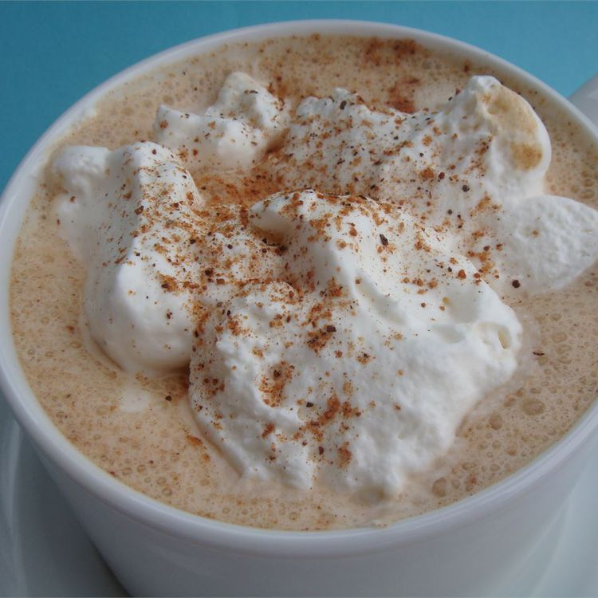

Eggnog Latte

Description
The finishing touch to your cozy Christmas evening. Warm up (and sober up LOL) with this delightful Eggnog Latte.
Ingredients
- 1/3 cup 2% milk
- 2/3 cup eggnog
- 1 (1.5 fluid ounce) jigger brewed espresso
- 1 pinch ground nutmeg
Steps:
- Pour milk and eggnog into a steaming pitcher and heat to between 145 degrees F to 165 degrees F(65 to 70degrees C) using the steaming wand.
- Brew a shot of espresso;pour into a mug. Pour steamed milk and eggnog into the mug, using a spoon to hold back the foam. Spoon foam over the top. Sprinkle nutmeg on top of foam.